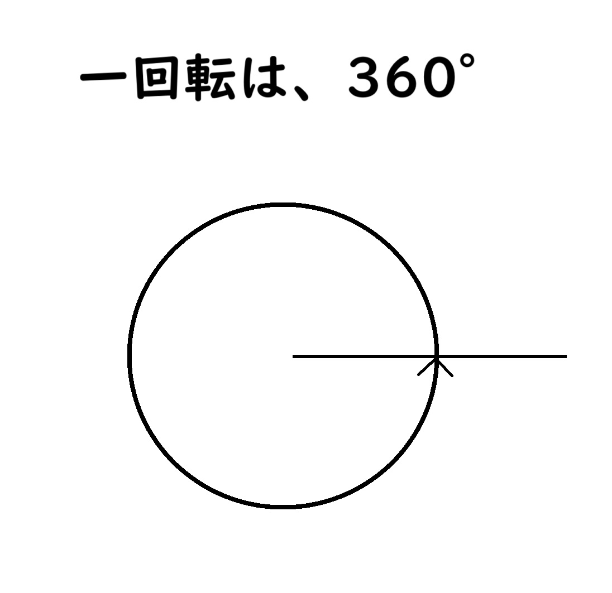
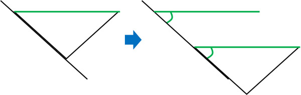

"時々、誰も想像もできないことをするのは、誰も想像もできない人たちです。"

紹介

紹介

紹介

発言
"機械が絶対に間違えることがないなら、その機械は知的ではありません。"
"プログラミングは、本から学ぶよりも、実践と例を通して習得するほうがよいスキルです。"
"科学は微分方程式です。宗教は境界条件です。"
"紙と鉛筆と消しゴムを与えられ、厳しい訓練を受けている人間は、事実上万能機械である。"
"機械が絶対に間違いがないと期待されるなら、その機械は知的であるはずがありません。"
エピソード
人生